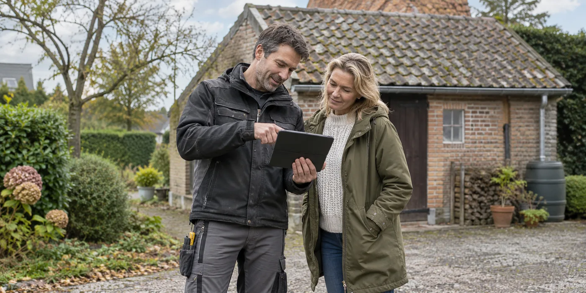

Laat onzekerheid zichtbaar op de offerte staan
Vertel de aannemer welke documenten je hebt en welke materialen nog niet onderzocht zijn. Vraag of de prijs uitgaat van een asbestvrij dak of van een specifieke verwijderingsopdracht. Een aanname die alleen mondeling wordt uitgesproken, is later moeilijk terug te vinden. Vraag welk onderzoek nodig is om de opdracht definitief te omschrijven.
Voorkom dat PV-plannen de diagnose overslaan
Als er ook zonnepanelen komen, laat de dakbeoordeling eerst plaatsvinden. Buildwise waarschuwt voor plaatsing op asbesthoudende dakbedekking omdat montage ingrepen aan die bedekking vraagt. Bespreek dus eerst het dak en daarna de verankering van de panelen. Bewerk verdachte materialen niet zelf om een offerte sneller te kunnen aanvragen.

Vergelijk de volledige verwijderingsopdracht
Vraag wie onderzoek, verwijdering en afvalafvoer organiseert en welke bewijsstukken je ontvangt. Laat ook tijdelijke bescherming en de nieuwe dakopbouw meenemen. Controleer actuele premievoorwaarden afzonderlijk: een mogelijke premie vervangt geen duidelijke opdracht. De keuze van de juiste verwijderingsmethode moet door een bevoegde professional worden beoordeeld.
Zet onderzoek als beslismoment in de planning
Vraag welke uitkomst de werfplanning kan veranderen en wie daarover communiceert. Een offerte onder voorbehoud hoort aan te geven wanneer ze wordt bevestigd of herzien. Laat materiaalonderzoek en uitvoering niet samenvallen zonder duidelijke afspraak. Wanneer verschillende aannemers betrokken zijn, deel je het bevestigde resultaat met iedereen die aan het dak werkt. Daarmee voorkom je dat de ene partij nog met een oude aanname rekent terwijl de andere de opdracht al heeft aangepast.
Een vermoeden is geen materiaalidentificatie
Een oud dak kan vragen oproepen door bouwjaar, uiterlijk of ontbrekende documentatie. Maak daarvan een onderzoeksvraag en geen conclusie op afstand. Verzamel bestaande attesten en informatie over vroegere werken, maar laat bepalen of die documenten het betrokken dakmateriaal voldoende beschrijven. Een andere daklaag of latere vervanging kan immers een nieuwe vraag stellen. Vraag expliciet welke materialen onderzocht worden en waar nog onzekerheid blijft. Het helpt de offerte wanneer iedereen dezelfde bevestigde informatie gebruikt, in plaats van dat de ene aanbieder een aanname maakt en de andere al een specifieke verwijderingsopdracht rekent.
Drie beslissingen die je uit elkaar houdt
Bespreek eerst wat het materiaal is, vervolgens welke werkzaamheden nodig zijn en daarna hoe die worden uitgevoerd. Dat zijn samenhangende, maar verschillende beslissingen. Een onderzoeksresultaat geeft niet vanzelf een volledige sloop- en renovatieplanning. Vraag de uitvoerder hoe verwijdering, bescherming en afvalafvoer in de opdracht terugkomen. Laat ook weten welke delen niet bij die opdracht horen. Bij een woning met meerdere oudere dakvlakken is dat bijzonder nuttig. De planning voor één onderzocht dakdeel mag niet ongemerkt gebruikt worden voor een ander onderdeel waarvan de materiaaltoestand nog niet bevestigd is.
Waarover moet een voorwaardelijke offerte duidelijk zijn?
Vraag welke informatie de prijs nog kan veranderen. Is materiaalonderzoek nog nodig, is een gedeelte niet toegankelijk of hangt een werkwijze af van een latere vaststelling? Laat het verschil tussen bevestigd werk en een voorbehoud zichtbaar maken. Vraag wanneer een nieuwe offerteversie wordt opgesteld en wie die beslissing communiceert aan andere betrokken aannemers. Zo kun je vooraf begrijpen wat de startdatum nog onzeker maakt. Een voorbehoud is niet per definitie een slechte offerte; een onduidelijk voorbehoud maakt het juist moeilijk om meerdere voorstellen en hun planning eerlijk te vergelijken.
Waarom je zonnepanelenplanning erop moet wachten
Wanneer je ook zonnepanelen wilt, moeten de betrokken partijen met dezelfde dakbeoordeling werken. Laat de PV-installateur weten welke dakmaterialen en werken bevestigd zijn en welke nog onderzocht worden. De technische bevestiging van zonnepanelen is een volgende ontwerpvraag, geen manier om materiaalonderzoek over te slaan. Plan geen proefmontage of eigen ingreep om te ontdekken wat onder een verdachte plaat zit. De combinatie van dakwerken en PV kan organisatorisch efficiënt zijn, maar alleen als de volgorde van onderzoek, dakuitvoering en elektrische werkzaamheden duidelijk is voordat de opdracht daadwerkelijk wordt uitgevoerd.
Welke bewijzen bewaar je na de werken?
Vraag welke onderzoek-, uitvoerings- en afvoerdocumenten voor jouw opdracht beschikbaar komen. Bewaar ze bij de factuur en de informatie over de nieuwe dakopbouw. Noteer ook welke oude delen behouden bleven. Bij een toekomstige verkoop of uitbreiding is dat onderscheid belangrijker dan een algemene mededeling dat er ooit asbestwerken zijn gebeurd. Laat praktische vragen over onderzoek en verwijdering beantwoorden door de betrokken professionals. De informatie van OVAM helpt om het onderwerp te begrijpen, maar is geen vervanging voor de beoordeling en veilige uitvoering van jouw concrete project.
Praktische vergelijking
| Fase | Bevestigen | Niet veronderstellen |
|---|---|---|
| Onderzoek | Materiaal en onderzochte delen | Dat een foto uitsluitsel geeft |
| Offerte | Verwijdering en afvoer | Dat iedere aannemer dezelfde aanname gebruikt |
| Planning | Resultaat en definitieve opdracht | Dat een voorlopige datum vastligt |
| Oplevering | Documenten en behouden delen | Dat alle oude dakdelen vervangen zijn |
Een praktisch voorbeeld
Je vraagt één offerte voor dakvernieuwing en PV. Als het oude materiaal nog niet geïdentificeerd is, laat je de planning eerst afhankelijk maken van dat onderzoek. Een snelle startdatum is dan nog geen volledige voorbereiding.
Illustratief scenario, geen klantcase.
Neem dit mee naar je gesprek
- Beschikbare materiaalinformatie
- Welke aanname gebruikt de offerte?
- Onderzoek vóór definitieve planning
- Afvoer en bewijsstukken afgesproken
Veelgestelde vraag
Kan de aannemer asbest altijd op een foto herkennen?
Een foto geeft geen sluitende vaststelling. Laat bepalen welk onderzoek voor jouw materiaal nodig is.
Bron en achtergrond
OVAM: officiële of technische achtergrond bij dit onderwerp ↗
Geraadpleegd op 13 oktober 2026. De praktische checklist en het voorbeeld zijn redactionele uitwerkingen. Fabrikantinformatie geldt voor de beschreven producten; ze is geen algemene garantie voor andere systemen.
Wat betekent dit voor jouw woning?
Gebruik de calculator voor een eerste indicatie. Een vakman beoordeelt jouw situatie en bevestigt de uitvoering en definitieve prijs.
Bekijk de dakwerkencalculator →